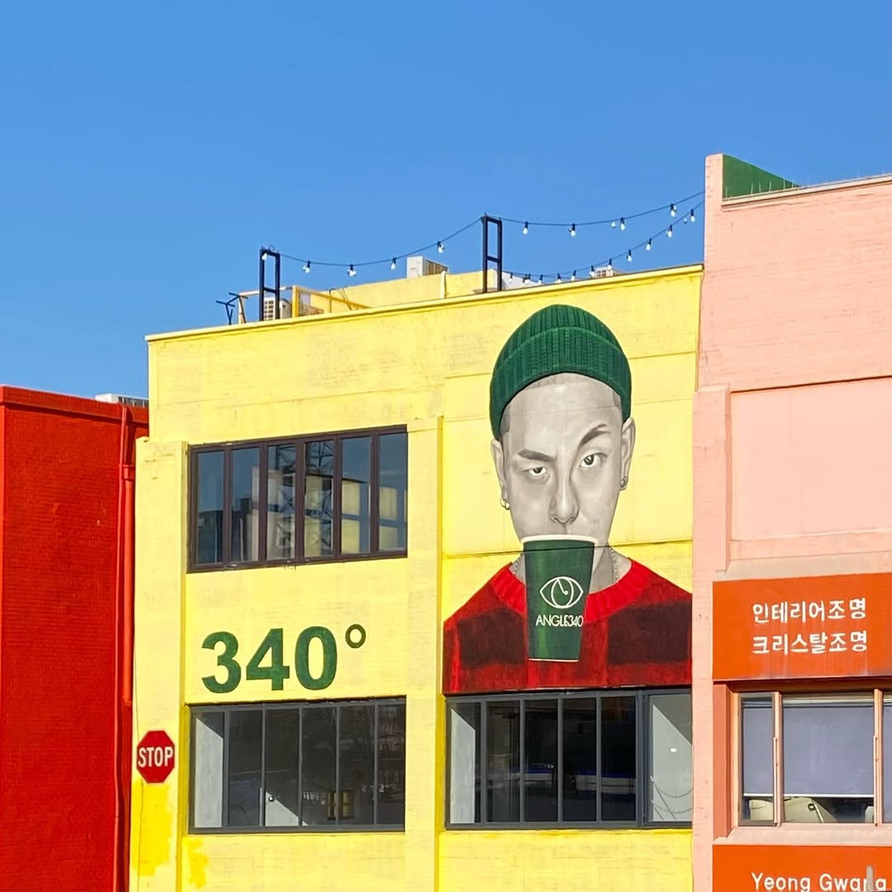
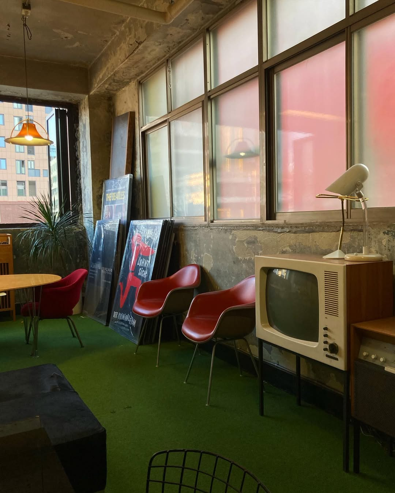

- 
- 

-
space
거칠지만 감각적인 인테리어, 세월을 담은 공간
-
art
갤러리 같은 예술적 무드, 공간을 감상하는 경험
-
mood
조용하고 아늑한 분위기 사색하고 쉬어가는 감성
Urban Vintage
낡은 골목 끝, 햇살이 스미는 공간.
거친 벽과 따스한 나무결 사이, 한 잔의 커피와 함께 펼쳐지는 작은 전시회.
바쁜 도시 속, 숨을 고르고 사색할 수 있는 당신만의
아지트.
이곳에서, 하루를 예술처럼 채워보세요."
거칠지만 감각적인 인테리어, 세월을 담은 공간
갤러리 같은 예술적 무드, 공간을 감상하는 경험
조용하고 아늑한 분위기 사색하고 쉬어가는 감성
신선한 원두 본연의 풍미를 정성스럽게 끌어올려, 매 순간 따뜻한 감동을 전합니다
향기로운 시작과 부드러운 끝맺음, 당신의 일상에 특별한 순간을 선물합니다